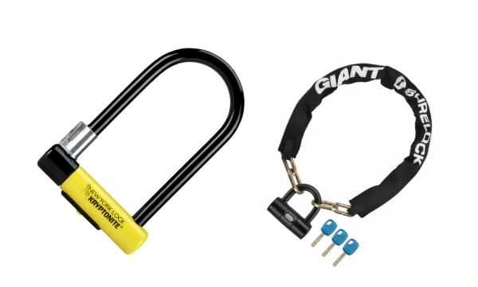
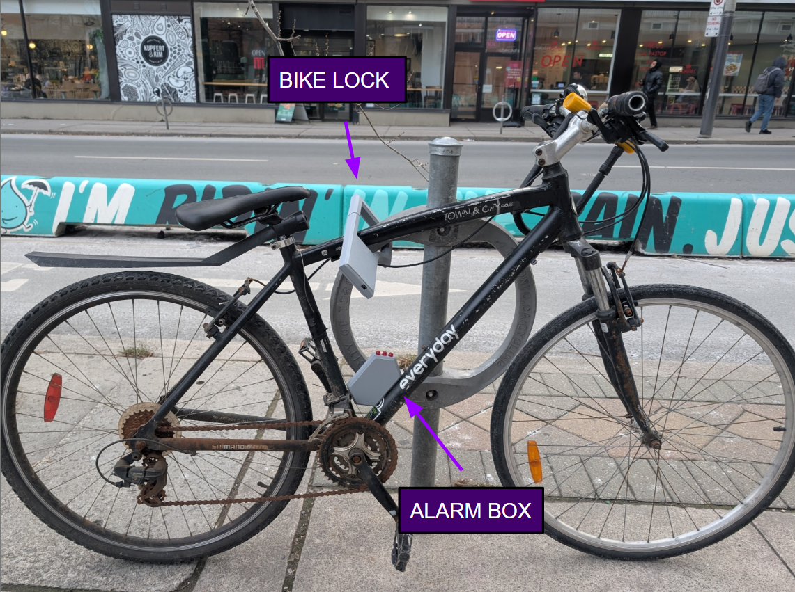
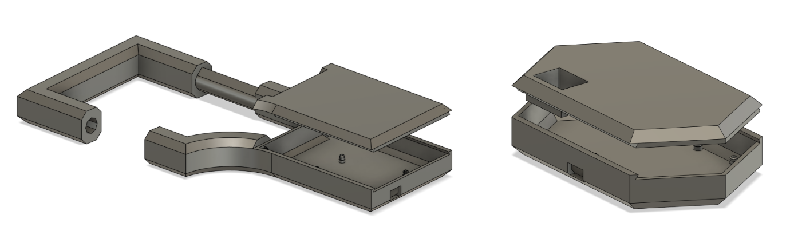
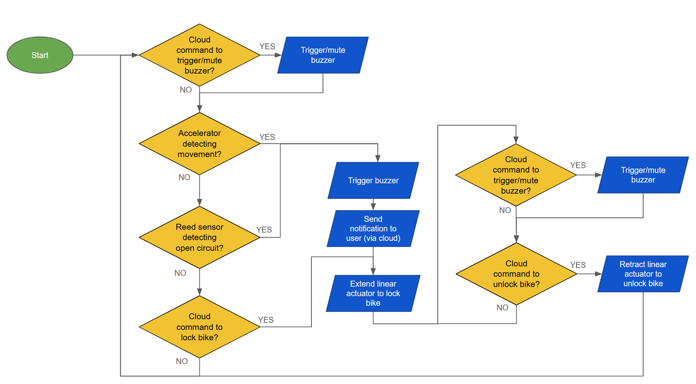

‹ Projects
Bike Lock Alarm
Background and Motivation
The Bike Lock Alarm is a project I worked on with two engineering students for a graduate class (ECE1528 - Internet of Things). The goal of the project was to design an IoT system, consisting of physical IoT devices and cloud infrastructure to operate the system.
For many students at UofT, biking is a popular way of getting around. However, bike thefts are quite prevalent around campus, and deter many from owning their own bikes. To address this issue, our group believed that we could incorporate IoT technology in existing bike locks to make it harder for thieves to steal bikes.

The U-lock and chain-lock are popular methods of securing bikes - yet many bike thieves are not deterred by these simple contraptions
Our goal was to create a bike lock that would detect when a thief was attempting to break in, upon which alarms would be triggered to scare them away. Additionally, our system would allow users to monitor their bikes remotely through a user interface, which would also notify users when suspicious activities occur. Ultimately, we hoped that our system would provide an additional layer of security and deter potential bike thieves.
System
The system that we designed consisted of 4 main components.
| 1 | The bike lock | The bike lock, like a normal bike lock, would be used to secure the bike to a bike rack. However, unlike a normal bike lock, it would contain several sensors (accelerometer and switches) that monitor the lock and detect if it is being tampered with, or broken into. |
| 2 | The alarm box | The alarm box would be mounted to the frame of the bike, and would contain sound alarms and LEDs that would trigger when the bike lock detects suspicious activity. In addition, it would act as a communication gateway between the bike lock and the cloud. Communication between the alarm box and bike lock would occur through bluetooth using IoT protocols (MQTT) and would communicate to the cloud either through WiFi, or a cellular data transmitter/receiver. |
| 3 | The cloud component | The cloud component, hosted on Google Cloud Services, and would contain a database and web server. |
| 4 | The web interface | The web interface would allow users to monitor the bike lock system remotely, as well as manually activate or deactivate the sound alarm. |
To use our system, the user would lock the bike in a similar way to a normal u-lock. An example of a secured bike is shown below.

A bike secured with our IoT bike lock. The Alarm box is mounted to the frame of the bike, and communicates to the cloud using WiFi or through cellular network communicationContribution
For this project, my main focus was the physical system (the bike lock and alarm box), while my team members worked on the cloud infrastructure and user interface. My contributions included:
- Designing the physical bike lock and alarm box using Fusion360. I manufactured the components using a Bambu A1 mini, and used iterative prototyping techniques to make improvements to the strength and usability of the design. I also designed the physical snapping mechanism to allow users to easily open and close the bike lock, while accommodating an electrical connection through the loop of the lock.
- Designing an electrical layout for the electrical components, soldering all components on two prototype boards, and assembling the components into the bike lock and alarm box.
- Programming a ESP8266 microcontroller (C++) on the bike lock and alarm box to read from the sensors, process sensor data, and communicate with the cloud server using IoT protocols (MQTT and AMQP).

Blow-up renderings of the 3D CAD models of the bike lock and alarm box. Created with Fusion360.
The flow of logic for the ESP8266 microcontrollers interfacing with sensors and actuatorsDemonstration of components
For the final project deliverable, we created the video below to demonstrate our proof of concept.